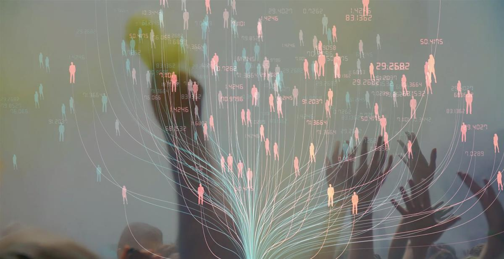

Narrated by Mark Rylance
ON SOURCE: GLOBAL ASSEMBLY
The Mission of the 2021 Global Assembly was to give everyone on earth a seat at the global governance table.
The vision:to create a permanent global citizens’ assembly
...that by 2030 has over 10m annual participants, is recognised in improving our ability to tackle global issues such as climate change, health and inequality, is recognised by over 50% of the global population and is mostly funded by citizens’ donations.
The history: built from the ground-up
... by a global family from over 110 countries.
Most citizens’ assemblies are top-down, initiated by governments.
The 2021 Global Assembly was independent. co-designed with institutions, scientists, citizens and social movements from around the world and built entirely from the ground-up.
ON SOURCE: GLOBAL ASSEMBLY
